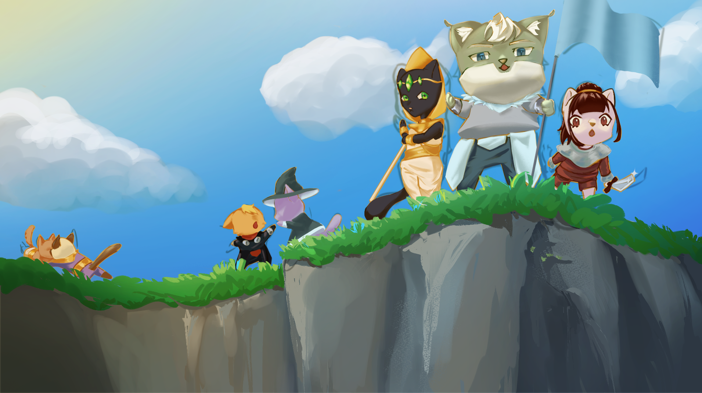

Tails of War

Command an army to face off against your feline foes in a game of strategy, wits, and whiskers. Capture cities, use special abilities, obtain Artifacts of Power, and spawn units in this turn-based battle for strategic dominance against your opponents - in both solo play and online multiplayer!
Date
September 2023 - January 2024
Role(s)
Programming, QA
Technology Used
Unity, C#, Jira, BitBucket, Confluence, Git